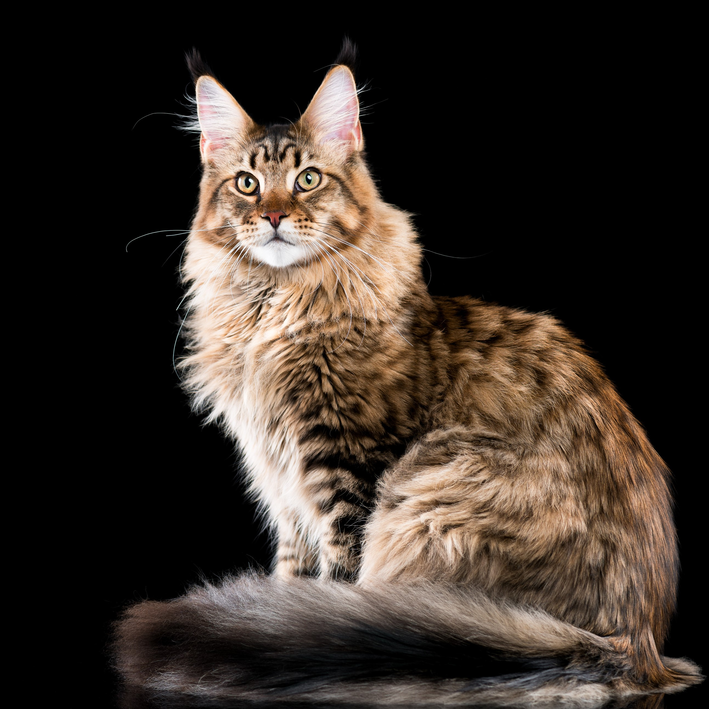

Cat Breeds
The cat is a domestic species of small carnivorous mammal. To wikipedia please visit: https://en.wikipedia.org/wiki/Cat_breed
The cat is a domestic species of small carnivorous mammal. To wikipedia please visit: https://en.wikipedia.org/wiki/Cat_breed
| Breed Type | Origin | Picture Of The Cat |
|---|---|---|
| Persian | Iran | |
| Siamese | Thailand | |
| Maine Coon | Maine, United Kingdom |  |